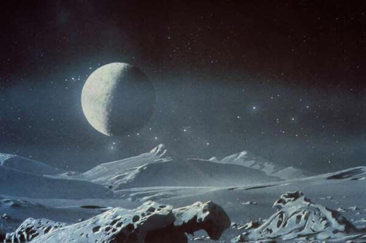
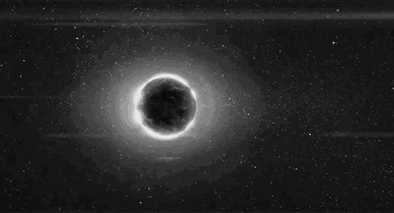
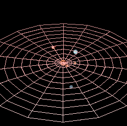

Pluto

- Pluton se roteste in jurul axei in 6 zile si 9 ore.
- Se invarte in jurul Soarelui in 248 ani.
- Temperatura: -238 ° C.
- Diametrul: 3.000 km.
- Gravitatia: 0.03x. Are o foarte subtire atmosfera.
- Are 1 luna, niciun inel.
- Luna, se numeste Charon, este jumatate din dimensiunea lui Pluton.
- Orbita lui Pluton este eliptica si inclinata, si traverseaza în interiorul orbitei lui Neptun.

Descoperirea lui Pluto Pluto a fost descoperita ca rezultat al unei cercetari prin telescop initiate în 1905 de catre astronomul american Percival Lowell, care a presupus existenta unei planete îndepartate dincolo de Neptun, ca urmare a unor mici neregularitati în orbitele lui Uranus si Neptun. Continuata dupa moartea lui Lowell de cercetatorii de la observatorul Lowell, cercetarea s-a încheiat cu succes când astronomul american Clyde W. Tombaugh l-a gasit pe Pluto. Orbita Orbita lui Pluto este diferita de orbitele planetelor. Este foarte înclinata deasupra planului ecliptic si foarte excentrica (alungita, necirculara). Excentricitatea duce la faptul ca se intersecteazacu orbita lui Neptun. Cea mai recenta aparitie a acestui fenomen a durat de la 7 februarie 1979 pâna la 11 februarie 1999. Calcule matematice indica faptul ca aparitia anterioara a acestui fenomen a durat 14 ani, de la 11 iulie 1735 pâna la 15 septembrie 1749. Aceleasi calcule arata ca Pluto a fost a opta planeta (pitica) de la Soare între 30 aprilie 1483 si 23 iulie 1503, o durata aproximativ egala cu cea dintre 1979 si 1999. Studii recente sugereaza ca fiecare trecere a lui Pluto în orbita lui Neptun dureaza cu aproximatie între 13 si 20 de ani, cu alternanta si mici variatii.